Erupção Vulcânica
A explosão do vulcão Krakatoa, na Indonésia, foi tão poderosa que o som pôde ser ouvido a mais de 4.800 km de distância — equivalente a escutar um estrondo feito em São Paulo a partir de Manaus! O barulho chegou a romper tímpanos de pessoas a 60 km do vulcão. Além do som, a erupção causou tsunamis, destruiu cidades inteiras e reduziu a temperatura global por anos, devido à grande quantidade de cinzas lançadas na atmosfera.
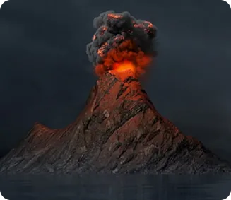
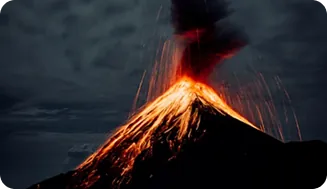
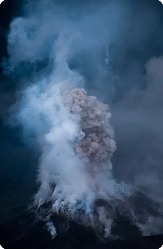
O que é uma erupção vulcânica?
Uma erupção vulcânica ocorre quando o magma — uma mistura de rocha derretida, gases e outros materiais quentes — sobe do interior da Terra e é expelido pela superfície através de um vulcão. Isso acontece porque a pressão acumulada no manto e na crosta terrestre força o magma a escapar, abrindo fissuras ou cratera no solo. Durante a erupção, além da lava que pode fluir lentamente, são liberados gases tóxicos, cinzas vulcânicas e fragmentos de rocha que podem alcançar grandes alturas. Esses eventos variam bastante em intensidade, podendo causar desde danos locais até impactos ambientais globais, dependendo da magnitude.
Formação dos vulcões
Os vulcões se formam principalmente nas regiões onde há movimentação das placas tectônicas da Terra. Quando essas placas se afastam, colidem ou deslizam uma sob a outra, o magma — rocha derretida no interior da Terra — encontra caminhos para subir à superfície. Esse magma acumulado pressiona a crosta terrestre até abrir fissuras ou criar pontos frágeis, por onde ele pode escapar. Com o tempo, as sucessivas erupções depositam camadas de lava e cinzas, formando a estrutura do vulcão, que pode ser um monte, uma montanha ou até uma ilha vulcânica. Além das bordas das placas, vulcões também podem surgir em pontos quentes, áreas do manto terrestre onde o calor é maior e o magma sobe independentemente do movimento das placas.
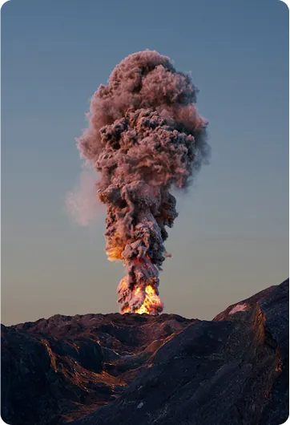
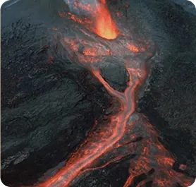
Como acontece uma erupção
O calor intenso do manto terrestre derrete rochas e forma o magma, uma mistura de rocha líquida, gases e cristais.
Por ser menos denso que as rochas ao redor, o magma sobe lentamente e se acumula em câmaras magmáticas.
Os gases dissolvidos no magma, como vapor d’água e CO₂, se expandem e aumentam a pressão dentro da câmara.
Quando a pressão supera a resistência da crosta, o magma abre caminho por fissuras e pela chaminé do vulcão.
Na cratera, o magma é expelido como lava, cinzas, gases e fragmentos de rocha: começa a erupção.
Impactos das erupções
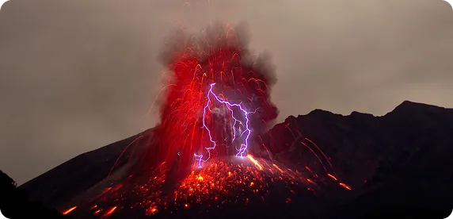
Durante uma erupção, a lava pode destruir casas, estradas e plantações, enquanto os fluxos piroclásticos — nuvens de gás e rocha a centenas de graus — devastam tudo em poucos minutos. As cinzas lançadas na atmosfera cobrem cidades inteiras, contaminam a água, derrubam telhados pelo peso acumulado e causam problemas respiratórios na população.
Os impactos vão além das áreas próximas ao vulcão. Grandes nuvens de cinzas interrompem o tráfego aéreo, e gases como o dióxido de enxofre podem formar chuva ácida e até reduzir a temperatura global por meses, como aconteceu após a erupção do Tambora em 1815. Erupções em vulcões cobertos de gelo ainda podem provocar lahares, enxurradas de lama capazes de soterrar cidades.
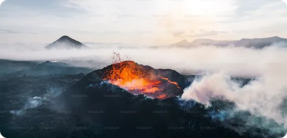
Medidas de prevenção e evacuação
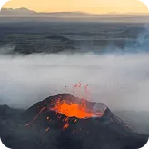
Monitorar continuamente os vulcões ativos com sismógrafos, sensores de gases e satélites para detectar sinais de erupção e emitir alertas antecipados à população.
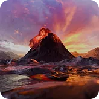
Promover campanhas e treinamentos para que a comunidade saiba como agir antes, durante e depois do desastre.
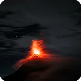
Mapear as áreas de risco e evitar construções nas encostas e nos vales por onde lava, lama e fluxos piroclásticos costumam descer.
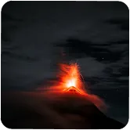
Definir rotas de evacuação e abrigos seguros, e manter um kit de emergência com máscaras contra cinzas, óculos de proteção, água e alimentos.
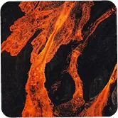
É fundamental garantir que exista uma rede de comunicação clara, rápida e acessível entre as autoridades responsáveis e a população. Isso inclui o uso de sirenes, mensagens por celular, rádios comunitários e outros meios para transmitir informações e orientações em tempo real. Uma comunicação eficiente ajuda a evitar pânico, a coordenar ações de evacuação e a garantir que todos saibam onde buscar ajuda e abrigo durante a emergência.